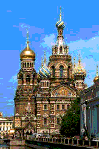

SECOND INTERNATIONAL CONFERENCE
"CONTROL OF OSCILLATIONS AND CHAOS" (COC 2000)
Saint-Petersburg, RUSSIA
July 5-7, 2000
Conference Report
Proceedings
Final Program
Travel Information
Social Program
Information for Speakers
Final Announcement and Call for Participation
Preliminary Program
Registration Form
Author's Guide
IEEE Copyright Form
International Program Committee
National Organizing Committee
ADDRESS OF ORGANIZING COMMITTEE
Prof. A.L.Fradkov
Laboratory
"Control of Complex Systems"
The Institute for Problems of Mechanical Engineering
61 Bolshoy ave. V.O.
199178, St.Petersburg, RUSSIA
Tel: +7(812)321-4766, Fax: +7(812)321-4771
E-mail:
coc2000@ccs.ipme.ru
,
ccs@alf.ipme.ru
This page is constructed by
D. Tomchin
. Last Updated: August 5, 2000.